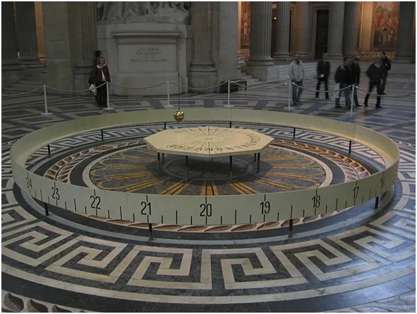
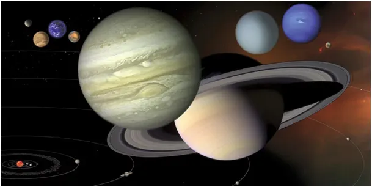

Wahadło Foucaulta (Fukota).
"A jednak się kręci. " Te legendarne słowa Galileusza do 1851 roku nie miały podstaw. To zdumiewające, że dopiero w XIX w. zauważono coś najbardziej oczywistego od czasów Kopernika (1543) oraz Newtona (1687).
Dopiero w połowie XIX w. opisanym doświadczeniem udowodniono, że Ziemia wiruje, do tej chwili cały dorobek astronomii był tylko niepotwierdzoną hipotezą! W tym odkryciu było coś, co zadaje kłam wszelkiej maści relatywistom, obserwacja Foucaulta dowodzi, że wszechświat jest, jaki jest a nie taki, jak go sobie wyobrazimy. To bardzo ważne w sytuacji, gdy współczesna nauka często posługuje się takimi pojęciami jak "pozorny ruch Słońca", "prawdopodobieństwo pozycji atomu", "teoria względności" itp. Ale co tak wielkiego zrobił ten genialny naukowiec? W swej piwnicy, na 2 metrowym sznurku powiesił 5 kilogramowy ciężarek, odchylił go na bok i puścił swobodnie. Ciężarek bujał się z prawa do lewa. Gdyby nie opór powietrza i tarcie sznurka w miejscu mocowania taki układ buja się nieskończenie długo.

Niby nic takiego, ale Foucault narysował kredą na podłodze linię, po której to wahadło bujało się z prawej do lewej. Po pewnym czasie zauważył, że ruch wahadła już nie pokrywa się z białą linią i że płaszczyzna wahadła zmienia się równo w czasie. Powtórzono doświadczenie w paryskim w Panteonie z ciężarem blisko 30 kg na ponad 60. metrowej linie, potwierdziło się. O co tu chodzi i dlaczego to tak ważne? Dla uproszczenia opisu przenieśmy się na biegun, wychylmy wahadło np. w stronę Warszawy i puśćmy swobodnie. Już po godzinie wahadło będzie się bujać w stronę Londynu, po kolejnej godzinie w stronę Lizbony, itd. Co godzinę płaszczyzna ruchu przesunie się płynnie o 15 stopni. Sposób podwieszenie wahadła musi być tak łożyskowany, aby nie utrudniać procesu.

Czy wahadło wie, że Ziemia się kręci? Oczywiście, że nie. Newton przed odkryciem grawitacji zapytał: "Skąd Księżyc wie, gdzie jest Ziemia, aby krążyć wokół niej?" Takie naiwne pytania tworzą naukę! Skoro wahadło nie wie, że Ziemia się kręci, to najzwyczajniej nie kręci się, ponieważ od Newtona wiemy, że jeśli na ciało nie działa żadna siła, to stoi ono lub porusza się ruchem jednostajnym prostoliniowym." Na wahadło działa tylko pionowa siła przyciągania, stąd bujanie, ale od chwili puszczenia ciężarka z ręki żadne inne składowe w poziomie już nie działają.
Na biegunie mamy polarną gwieździstą noc, wahadło się buja wiele godzin, nad naszą głową po niebie wędrują gwiazdy analogicznie do Słońca i co wtedy zobaczymy? Wahadło waha się zawsze po tej samej płaszczyźnie w stosunku do gwiazd, dla niego niebo jest zupełnie nieruchome, ono buja się cały czas w jednej płaszczyźnie w Kosmosie ignorując rotację Ziemi. Dowodzi to, że istnieje bezwzględna przestrzeń, do potwierdzenia tak ważnego faktu wystarczy kawałek sznurka i ciężarek, ale przez setki lat nikt nie sformułował dobrze pytania na podobieństwo Newtona, który w swym geniuszu jak dziecko pytał przez pół życia, dlaczego rzeczy spadają.
Paweł Klimczewski